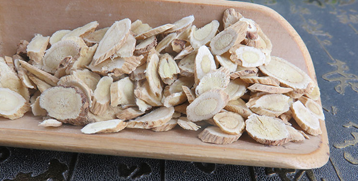
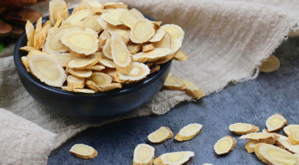
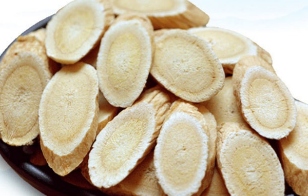
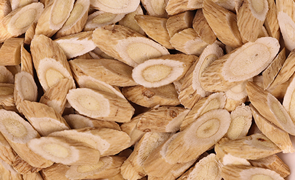

原文连接:https://www.daquan.com/post/12465.html
黄芪有着很好的补气养身的功效，黄芪泡水根据容器的大小选择的量是不一样的，如果泡黄芪的容器在100ml左右每次黄芪的量不要超过5片，如果杯子的大小在300ml左右，每次选择的量差不多是20片。黄芪泡水差不多是150ml左右的水选择10片黄芪。
黄芪泡水要根据水量选择
1、黄芪泡水的功效

黄芪有着补气的作用，人体补气可以增强抵抗力，补气还能养血，能让气色越来越好。中草药中补气的药物有很多，人参是最有名的补气药，但是如果养身使用黄芪泡水比人参泡水要好很多。这是因为人参补气但是性温，很容易上火，容易补的太过。黄芪泡水补气，性味相比较人参较温和，能够长期温补。
2、养身选择黄芪的量

如果是养身滋补身体使用黄芪泡水，每次黄芪的量最好15ml的水放10片左右的黄芪，如果感觉有上火的症状可以减量放5片左右。喝黄芪如果出现口腔溃疡、咽喉红肿疼痛还有风热感冒后最好不要继续使用黄芪泡水养身。这是因为黄芪性温，有滋补的作用，会加重上火，如果外感病邪使用温补药会加重病邪的入侵，感冒也会更严重。
3、治病使用黄芪的量

如果是需要泡黄芪水治病的，像气血虚弱需要长期使用黄芪水的，每次选择黄芪的量不能少于10g，差不多是45粒左右，多的不超过20g，差不多半把左右。治病需要使用的黄芪的量比普通养身的量大很多，这是因为普通养身使用的量只是滋补，治病需要对症治疗。
4、黄芪和其他药物一起泡的量

黄芪还能和很多药物一起搭配泡水，并且功效与作用都是不一样的。黄芪在滋补时使用的量不要太多，如果是需要补气血最好当归和黄芪放一样多的量。黄芪适合气虚的人长期滋补，不建议身体健康的青少年长期喝黄芪水。
黄芪泡水的使用方法
1、用开水泡茶

黄芪泡水的使用方法主要是用开水泡，像将烧开的滚水倒在放了黄芪的容器中。用开水直接泡第一步是先将黄芪清洗一下，因为黄芪这类的中药都是经过炮制处理的需要用开水第一边清洗。然后将开水倒在被子里泡半小时之后饮用。还可以直接煮黄芪倒水喝，这样的可以用自来水将黄芪洗净，然后放在水中和水一起煮开，煮开后再小火煮15分钟。
2、一份药泡两次
如果用开水来泡黄芪水的，要注意黄芪只能使用两次泡水，两次之后药效基本是没有的，可以将黄芪等中药倒掉，再继续喝白开水。黄芪这类中药虽然有滋补的作用，但是每天喝足够量的白开水也是对健康非常重要的。如果是用茶壶煮的黄芪，煮一次喝完就可以了。
3、滋补也要有节制
滋补养身是防未病很好的方法，但是要注意滋补也是有节制的，像黄芪泡水这样的中草药泡水的方式，最好使用一段时间后休息一段时间然后再次使用。滋补太过会导致上火，滋补太过。
结语：通过上文的介绍，相信大家都了解了关于黄芪泡水一次放多少水，以及黄芪泡水一次放多少片效果好。希望大家子滋补身体的时候要注意节制，避免因为滋补反而引起了其他疾病。